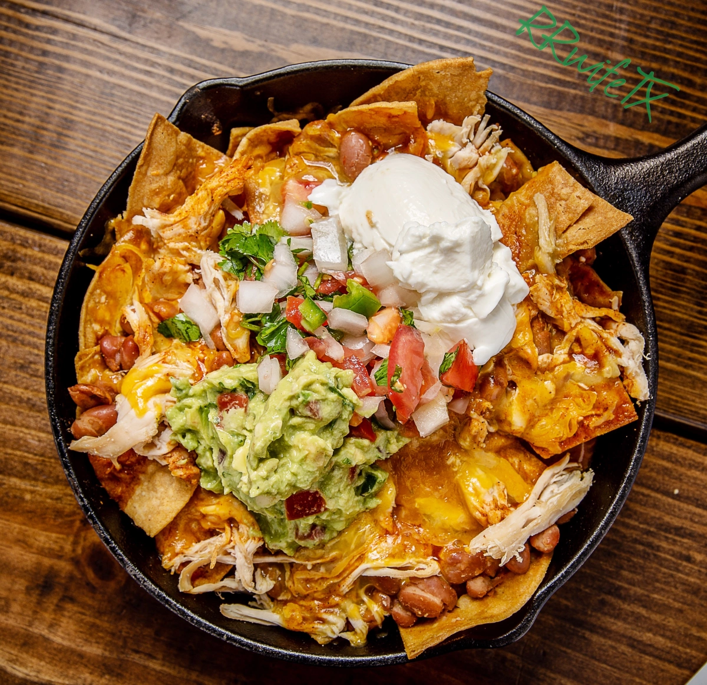

Nachos

Discription
Nachos are a popular Tex-Mex dish consisting of crispy tortilla chips
topped with melted cheese and a variety of flavorful toppings. Originally
created in Mexico in the 1940s, nachos have since become a favorite snack
and party food worldwide. Common toppings include jalapeños, beans,
sour cream, guacamole, and salsa. Some variations turn nachos
into a full meal by adding seasoned meat, such as beef, chicken, or pork,
along with extra layers of cheese and vegetables.
The versatility of nachos makes them a go-to dish for many occasions,
from game nights to casual dinners. They can be customized to fit different
dietary preferences, including vegetarian or vegan options. Some people
prefer classic simple nachos with just cheese and jalapeños, while others
enjoy loaded versions with multiple toppings and flavors. Whether baked in
the oven or assembled quickly with microwave-melted cheese, nachos remain
a delicious and satisfying treat.
This is HANDS DOWN the best Nachos you will
ever find :)
Ingredients
- Aluminum foil
- 1 pound ground beef
- 1 (1.25 ounce) package taco seasoning mix
- 1 (18 ounce) package restaurant-style tortilla chips
- 1 cup shredded sharp Cheddar cheese, or more to taste
- 1 (15.5 ounce) can refried beans
- 1 (10 ounce) can pitted black olives, drained and chopped
- 1 cup salsa
- 1 cup sour cream, or more to taste
- 4 green onions, diced
- 4 green onions, diced
- 1 (4 ounce) can sliced jalapeno peppers, drained
Steps
- Preheat the oven broiler. Set the oven rack about 6 inches from the heat source.
Line a baking sheet with aluminum foil.
- Gather all ingredients.
- Cook and stir ground beef in a skillet over medium heat until meat
is crumbly and no longer pink, 5 to 10 minutes. Drain excess grease.
Stir in water and taco seasoning mix; simmer until beef mixture has
thickened, 8 to 10 minutes.
- Spread tortilla chips on the prepared baking sheet.
Top with Cheddar cheese, then dot with refried beans and ground beef
mixture.
- Broil in the preheated oven until cheese is melted, 3 to 5 minutes.
Top nachos with olives, salsa, sour cream, green onions, and jalapeño
peppers.